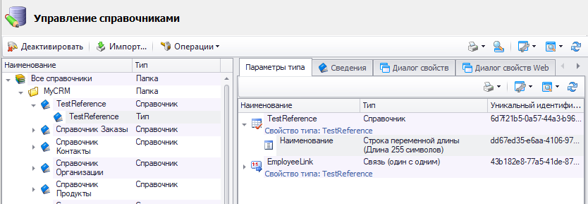
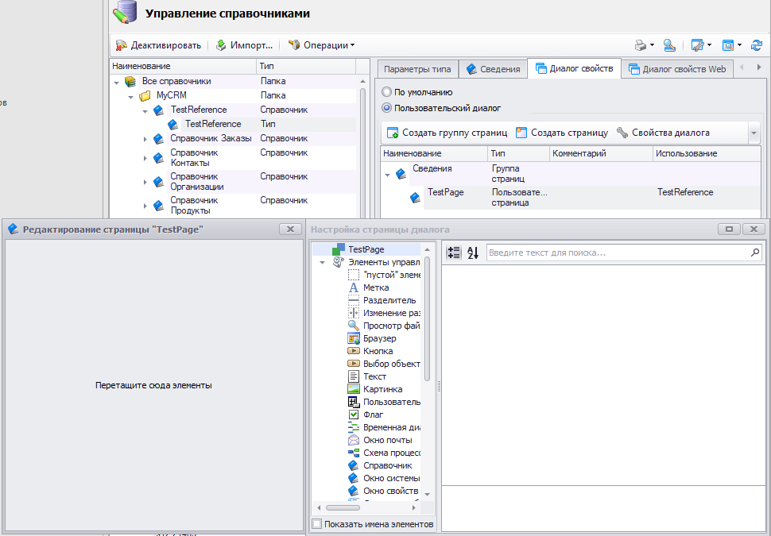
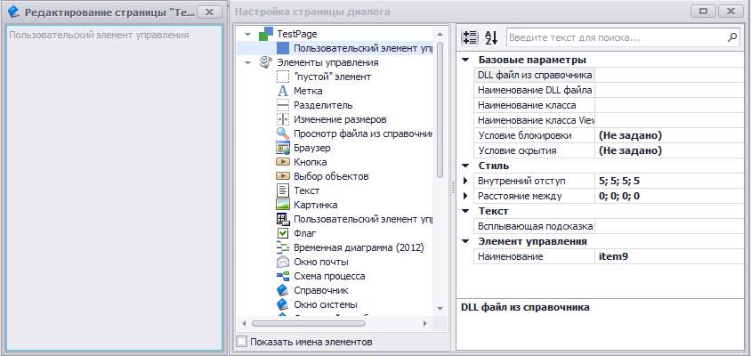
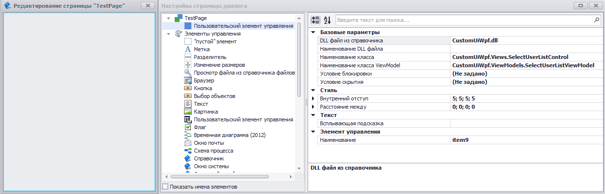
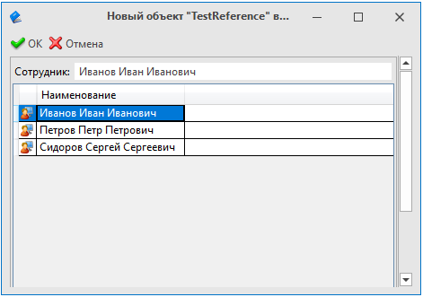

Пользовательский элемент управления |
В T-FLEX DOCs имеется возможность создания пользовательских элементов управления для использования в диалогах и пользовательских страницах. Ниже приведен пример создания такого элемента управления.
Для реализации пользовательского элемента управления необходимо:
-
Создать новый .NET Framework проект - Библиотека классов
-
В новом проекте подключить ссылки на библиотеки T-FLEX DOCs, которые расположены в каталоге с установленным клиентом "{Ваш путь до места установки}\Program", а также необходимые зависимости .NET Framework:
-
TFlex.DOCs.Model.dll;
-
TFlex.DOCs.IoC.Infrastructure.dll;
-
TFlex.DOCs.UI.Client.dll;
-
TFlex.DOCs.UI.Client.Common.dll;
-
TFlex.DOCs.UI.Utils.dll;
-
TFlex.DOCs.UI.Utils.Common.dll;
-
WindowsBase.dll;
-
PresentationCore.dll;
-
PresentationFramework.dll;
-
System.Xaml.dll;
-
System.Xml.dll;
-
System.dll;
-
System.Core.dll
-
-
Удалить новый сгенерированный файл класса "Class1.cs" и создать 2 новых каталога в проекте: Views; ViewModels
-
Создать в папке ViewModels новый класс, код которого расположен ниже
-
Создать новый элемент "Пользовательский элемент управления (WPF)" в папке Views, код которого расположен ниже
using System; using System.Collections.Generic; using System.Collections.ObjectModel; using System.Linq; using System.Threading; using TFlex.DOCs.Model; using TFlex.DOCs.Model.References; using TFlex.DOCs.Model.References.Users; using TFlex.DOCs.UI.Client.Common.ViewModels.Base; using TFlex.DOCs.UI.Client.Common.ViewModels.Layout.Common; using TFlex.DOCs.UI.Client.Common.ViewModels.References; using TFlex.DOCs.UI.Utils.Helpers; namespace CustomUiWpf.ViewModels { public class SelectUserListViewModel : ViewModel, IUserControlViewModel { /// <summary> Наименование выбранного пользователя </summary> private string _selectedUserName; /// <summary> Выбранный пользователь в списке доступных пользователей </summary> private UserViewModel _selectedUser; /// <summary> Объект справочника "TestReference"</summary> private ReferenceObject _referenceObject; /// <summary> Guid справочника "TestReference" </summary> private readonly Guid _referenceGuid = new("6d7f21b5-0a57-44a3-b96e-1afd15c52368"); /// <summary> Guid связи N:1 "EmployeeLink" типа "Пользователи" справочника "TestReference" на "Группы и пользователи"</summary> private readonly Guid _employeeLinkGuid = new("43b182e8-77a5-41de-87dd-d9aed2f24893"); public SelectUserListViewModel() : base(null) { } public SelectUserListViewModel(LayoutViewModel owner) : base(owner) { } public SelectUserListViewModel(ViewModel owner, ServerConnection connection = null) : base(owner, connection) { } /// <summary> /// Наименование выбранного пользователя /// </summary> public string SelectedUserName { get => _selectedUserName; set => SetPropertyValue(ref _selectedUserName, value); } /// <summary> /// Выбранный пользователь в списке доступных пользователей /// </summary> public UserViewModel SelectedUser { get => _selectedUser; set { SelectedUserName = value == null ? String.Empty : value.FullName; SetPropertyValue(ref _selectedUser, value); SetUserToLink(); } } /// <summary> /// Список доступных пользователей /// </summary> public ObservableCollection<UserViewModel> AvailableUsersList { get; set; } = new ObservableCollection<UserViewModel>(); public object LoadData(DataObjectViewModel viewModel, CancellationToken cancellationToken) { ReferenceObject referenceObject = GetReferenceObject(viewModel); if (referenceObject is not null) { var userReference = new UserReference(Connection); ReferenceObject userObject = referenceObject.GetObject(_employeeLinkGuid); List<User> users = userReference.GetAllUsers().ToList(); DispatcherHelper.CheckBeginInvokeOnUI(() => { LoadData(userObject, users); _referenceObject = referenceObject; }); } return viewModel; } public void RefreshUI(object loadedData, CancellationToken cancellationToken) { } public void ReadDataToObject(DataObjectViewModel viewModel) { ReferenceObject referenceObject = GetReferenceObject(viewModel); if (referenceObject is null) return; _referenceObject = referenceObject; SetUserToLink(); } // Система определяет возможность редактирования пользовательского ЭУ (к примеру, обработав условия блокировки) и результат передает в данный метод, // тем самым позволяя самостоятельно настроить блокировку элементов, входящих в пользовательский ЭУ public void SetEditable(bool editable) { } private void LoadData(ReferenceObject userObject, List<User> users) { AvailableUsersList.Clear(); SelectedUser = null; foreach (var user in users) { var newUser = new UserViewModel { Id = user.SystemFields.Id, FullName = user.FullName }; AvailableUsersList.Add(newUser); } if (userObject is User u) { var newUser = new UserViewModel { Id = u.SystemFields.Id, FullName = u.FullName }; SelectedUser = newUser; } } private ReferenceObject GetReferenceObject(DataObjectViewModel viewModel) { if (viewModel is not ReferenceObjectViewModel rvm) return null; if (rvm.ReferenceObject.Reference.ParameterGroup.Guid != _referenceGuid) return null; return rvm.ReferenceObject; } /// <summary> /// Установить по связи "Employee" объект справочника "Группы и пользователи" /// объекту справочника "TestReference" /// </summary> private void SetUserToLink() { if (_referenceObject is null || !_referenceObject.Changing || _selectedUser is null) return; var userReference = new UserReference(Connection); User user = userReference.Find(_selectedUser.Id) as User; if (user is not null) _referenceObject.SetLinkedObject(_employeeLinkGuid, user); } } public class UserViewModel { /// <summary>Id объекта справочника "Группы и пользователи"</summary> public int Id { get; set; } /// <summary>Наименование</summary> public string FullName { get; set; } } }
< UserControl x:Class="CustomUiWpf.Views.SelectUserListControl" xmlns="http://schemas.microsoft.com/winfx/2006/xaml/presentation" xmlns:x="http://schemas.microsoft.com/winfx/2006/xaml" xmlns:mc="http://schemas.openxmlformats.org/markup-compatibility/2006" xmlns:tdu="http://schemas.tflex.ru/docs/xaml/utils" xmlns:componentModel="clr-namespace:System.ComponentModel;assembly=WindowsBase" xmlns:vm="clr-namespace:CustomUiWpf.ViewModels" xmlns:d="http://schemas.microsoft.com/expression/blend/2008" mc:Ignorable="d" d:DesignWidth="220" d:DesignHeight="100"> <UserControl.Resources> <ResourceDictionary> <CollectionViewSource x:Key="AvailableUsers" Source="{Binding Path=(vm:SelectUserListViewModel.AvailableUsersList)}"> <CollectionViewSource.SortDescriptions> <componentModel:SortDescription PropertyName="FullName" /> </CollectionViewSource.SortDescriptions> </CollectionViewSource> </ResourceDictionary> </UserControl.Resources> <Border Margin="1" BorderThickness="1" BorderBrush="DarkGray"> <Grid Margin="2"> <Grid.ColumnDefinitions> <ColumnDefinition Width="Auto"/> <ColumnDefinition></ColumnDefinition> </Grid.ColumnDefinitions> <Grid.RowDefinitions> <RowDefinition Height="Auto" MinHeight="25" /> <RowDefinition/> </Grid.RowDefinitions> <TextBlock Grid.Column="0" Grid.Row="0" Foreground="Black" VerticalAlignment="Center" Margin="2" Text="Сотрудник:"/> <TextBox Grid.Column="1" Grid.Row="0" Margin="2 3 2 3" IsReadOnly="True" Text="{Binding Path=(vm:SelectUserListViewModel.SelectedUserName)}"/> <DataGrid Grid.Column="0" Grid.ColumnSpan="2" Grid.Row="1" AutoGenerateColumns="False" CanUserAddRows="False" CanUserSortColumns="False" SelectionMode="Single" IsReadOnly="True" SelectedItem="{Binding Path=(vm:SelectUserListViewModel.SelectedUser)}" ItemsSource="{Binding Source={StaticResource AvailableUsers}}"> <DataGrid.Columns> <DataGridTemplateColumn Width="18" CanUserResize="False" CanUserSort="False"> <DataGridTemplateColumn.CellTemplate> <DataTemplate> <Image Source="{tdu:IconSource Name=UsersMonitor, Type=ImageSource}" /> </DataTemplate> </DataGridTemplateColumn.CellTemplate> </DataGridTemplateColumn> <DataGridTextColumn Binding="{Binding FullName}" Header="Наименование"/> </DataGrid.Columns> </DataGrid> </Grid> </Border> </UserControl>
-
Импортировать собранную сборку в справочник "Файлы"
-
Перейти в "Управление справочниками", выбрать тип нужного нам справочника

-
Открыть настройку редактирования пользовательской страницы на вкладке "Диалог свойств"

-
Перенести на пользовательскую страницу и добавить "Пользовательский элемент управления"

-
Указать настройки - "DLL файл из справочника", "Наименование класса" и "Наименование класса ViewModel"

-
Открыть диалог свойств, где расположен пользовательский элемент управления
